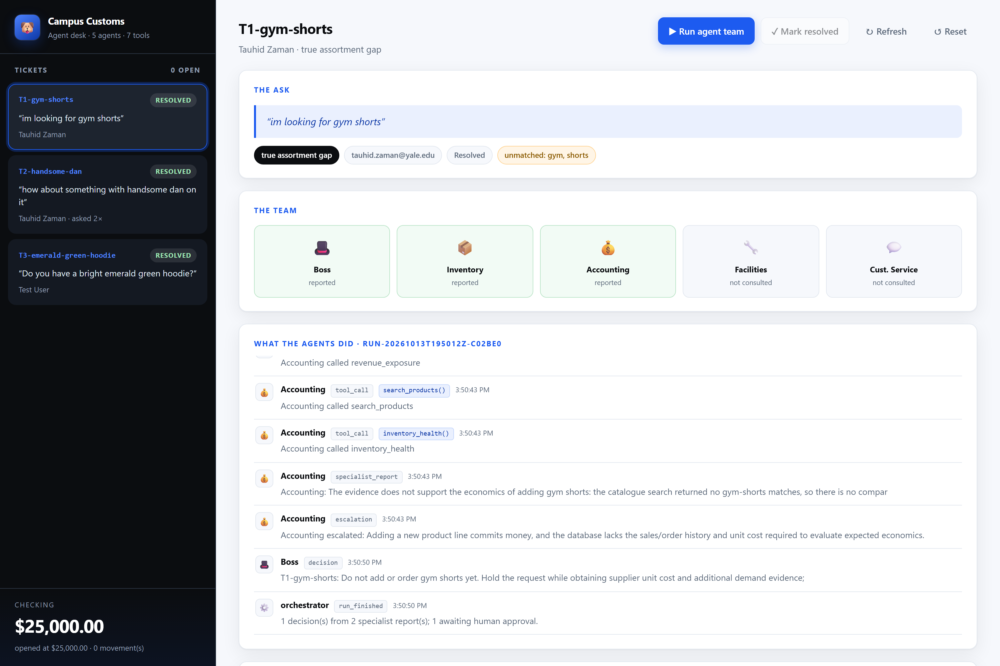
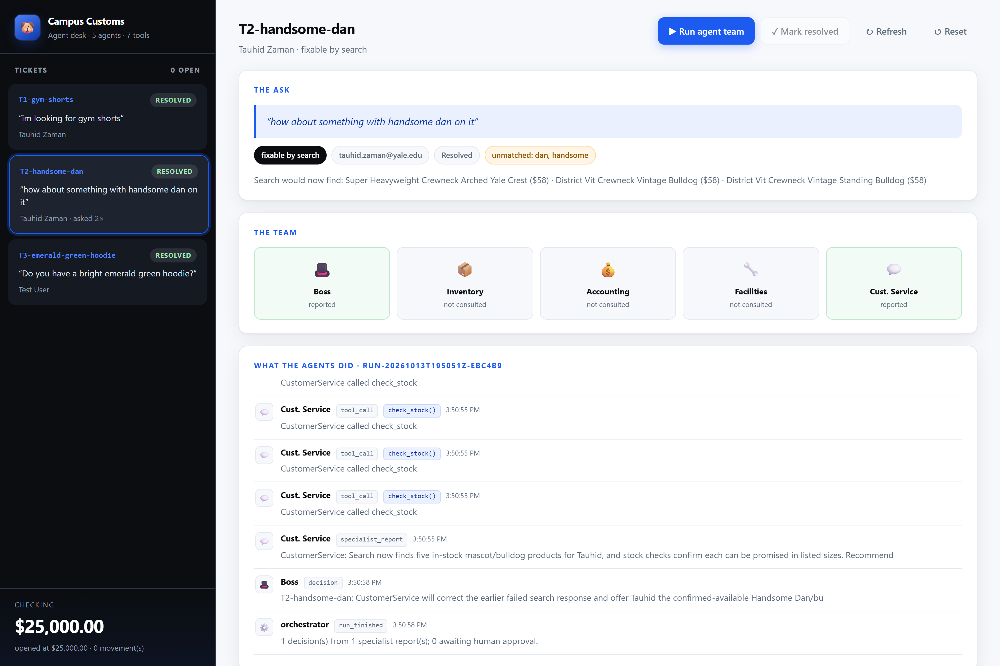
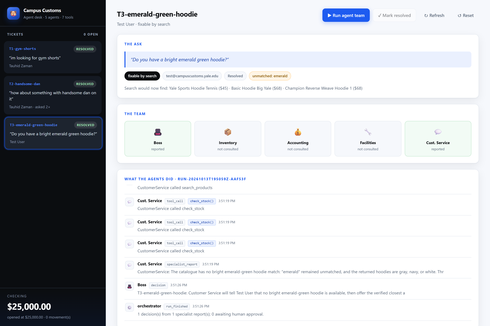

All three tickets worked to resolution by the agent team · captured from the live React dashboard
cash_accounts.balance exactly. No money moved because the only ticket that could
have cost anything (T1) was one the team recommended against buying. Itemised in the
Cash tab of desk_tickets.html.
All three tickets showing Resolved, with the checking balance pinned in the rail.

No purchase. Confirmed the shop carries no shorts at all. With one recorded request, no unit cost and no sales history, the team declined to commit spend and escalated the buying decision to a human.
Resolved by search. The mascot was indexed as "bulldog", never as "Handsome Dan". Five in-stock mascot products were verified and a corrected reply drafted for Tauhid.

check_stock() appears five times — once per product before
any was named to the customer.
can_promise: true. The Boss also added an unprompted instruction that the items
"must not be described as gym shorts", guarding against bleed-through from T1.
Resolved by search. Hoodies exist; an emerald-green colourway does not. Three verified in-stock hoodies were offered, with the colour gap stated plainly rather than glossed over.

"emerald" stayed unmatched, and the available colours are gray, navy and
white. Still outstanding: the colour-vocabulary gap itself was never fixed, so the
next customer asking for emerald will fail the same way.